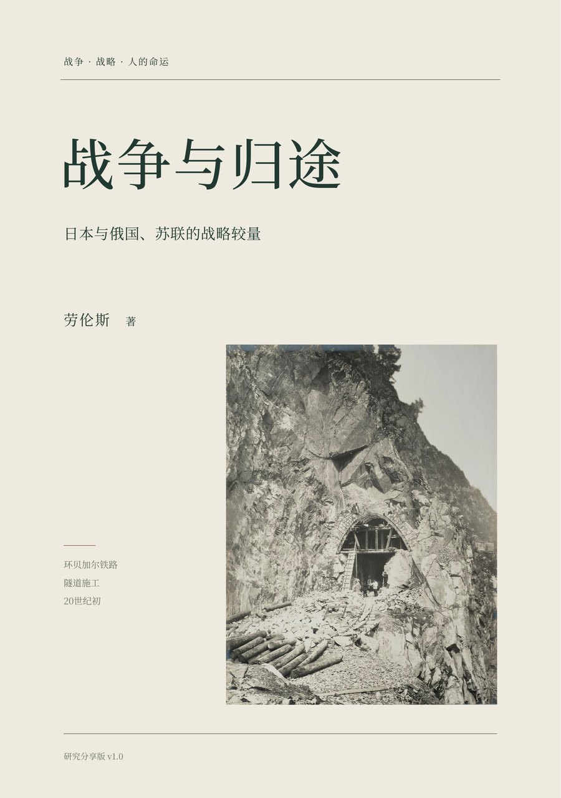

从 1904 年的旅顺、奉天与对马，到 1938—1939 年的张鼓峰、诺门罕，再到 1945 年的满洲、朝鲜、南萨哈林与千岛，最后落在战后抑留、归途与日苏关系的日常安排。
全书沿着战争背景、战争组织、战略战术、领导与决策、代价与成本、战俘与国际关系七条线索展开；十一章以后把“人的归途”放进战略史，追问国家选择留给个人的时间、健康与生活。
本版在正文之外新增五个部分页、1926—1937 年桥接、战役数字锚点、结语四项判断，以及第十五章“天皇的终战作用与战争责任”学术观点附记。
本版为作者自行整理的研究分享版，非正式出版物，不设 ISBN，不通过出版社发行；仅供研究、教学与小范围交流，非卖品。
© 2026 劳伦斯。保留权利；未经作者书面许可，不得商业使用。书中第三方图像、地图按各自许可使用；地图为研究示意图，不作为国界、主权或精确距离依据。
四项判断的学术争论，见第十五章附记；本书不做法庭式法律裁断。